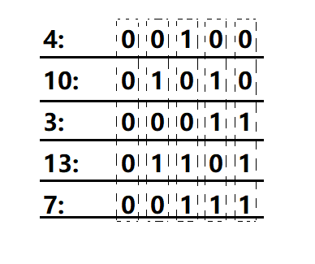

[Codeforces 242.E] XOR on Segment（线段树）
E. XOR on Segment
time limit per test:4 seconds
memory limit per test:256 megabytes
input:standard input
output:standard output
You’ve got an array $a$, consisting of $n$ integers $a_1,a_2,…,a_n$. You are allowed to perform two operations on this array:
- Calculate the sum of current array elements on the segment $[l,r]$, that is, count value $a_l+a_{l+1}+…+a_r$.
- Apply the xor operation with a given number $x$ to each array element on the segment $[l,r]$, that is, execute $a_l=a_l \oplus x,a_{l+1} = a_{l+1} \oplus x,…,a_r=a_r\oplus x$. This operation changes exactly $r-l+1$ array elements.
Expression $x\oplus y$ means applying bitwise xor operation to numbers $x$ and $y$. The given operation exists in all modern programming languages, for example in language C++ and Java it is marked as “^”, in Pascal — as “xor”.
You’ve got a list of m operations of the indicated type. Your task is to perform all given operations, for each sum query you should print the result you get.
Input
The first line contains integer $n$ $(1≤n≤10^5)$ — the size of the array. The second line contains space-separated integers $a_1,a_2,…,a_n$ $(0≤a_i≤10^6)$ — the original array.
The third line contains integer $m$ $(1≤m≤5·10^4)$ — the number of operations with the array. The $i$-th of the following $m$ lines first contains an integer $t_i$ $(1≤t_i≤2)$ — the type of the i-th query. If $t_i=1$, then this is the query of the sum, if $t_i=2$, then this is the query to change array elements. If the $i$-th operation is of type $1$, then next follow two integers $l_i,r_i$ $(1≤l_i≤r_i≤n)$. If the $i$-th operation is of type $2$, then next follow three integers $l_i,r_i,x_i$ $(1≤l_i≤r_i≤n,1≤x_i≤10^6)$. The numbers on the lines are separated by single spaces.
Output
For each query of type $1$ print in a single line the sum of numbers on the given segment. Print the answers to the queries in the order in which the queries go in the input.
Please, do not use the %lld specifier to read or write 64-bit integers in С++. It is preferred to use the cin, cout streams, or the %I64d specifier.
Examples
| input | output |
|---|---|
| 5 4 10 3 13 7 8 1 2 4 2 1 3 3 1 2 4 1 3 3 2 2 5 5 1 1 5 2 1 2 10 1 2 3 |
26 22 0 34 11 |
| 6 4 7 4 0 7 3 5 2 2 3 8 1 1 5 2 3 5 1 2 4 5 6 1 2 3 |
38 28 |
解题思路
由于 $x\leqslant10^6$，即 $x$ 不超过20位，可以每一位都开一个线段树，总共开二十个线段树。异或操作即是区间取反（$0$ 变成 $1$，$1$ 变成 $0$），询问操作转化为求区间$1$的个数。
如图，以样例1为例，竖着一个虚线框即开成一个线段树。

时间复杂度 $O(20\cdot n\log n)$
Code
1 |
|